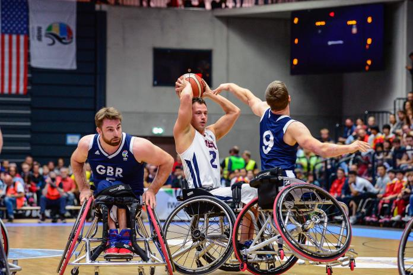

El baloncesto en silla de ruedas es uno de los deportes más populares del programa paralímpico. Comenzó a implantarse para rehabilitar a los soldados estadounidenses heridos durante la II Guerra Mundial, pero su popularidad se extendió rápidamente por todo el mundo. En la actualidad, se practica en más de 80 países. Las reglas del baloncesto en silla de ruedas son prácticamente las mismas que las de la modalidad de a pie: la cancha tiene las mismas medidas, las canastas están a igual altura y el sistema de puntuación es idéntico: dos tantos para las canastas logradas durante el juego, uno por cada tiro libre anotado y tres para los balones encestados desde más de 6,75 metros de distancia. La única diferencia consiste en que los jugadores deben botar o pasar la pelota después de empujar la silla dos veces.
Las reglas del baloncesto en silla de ruedas son prácticamente las mismas que las de la modalidad de a pie: la cancha tiene las mismas medidas, las canastas están a igual altura y el sistema de puntuación es idéntico: dos tantos para las canastas logradas durante el juego, uno por cada tiro libre anotado y tres para los balones encestados desde más de 6,75 metros de distancia. La única diferencia consiste en que los jugadores deben botar o pasar la pelota después de empujar la silla dos veces. BaloncestoEn el baloncesto en silla de ruedas los equipos también constan de doce jugadores, con un máximo de cinco en pista. A cada deportista se le asigna una puntuación entre el 1.0 y el 4.5, según su menor o mayor habilidad funcional. Durante el juego, la suma de los puntos de los cinco jugadores en pista no puede exceder de 14. La primera competición paralímpica de baloncesto en silla de ruedas tuvo lugar durante los Juegos de Roma 1960, aunque las mujeres no debutaron hasta Tel Aviv 1968.
Algunos Jugadores
Mayo Hagino
Para la japonesa Mayo Hagino, una incondicional que lleva en el equipo nacional desde 2010, los Juegos Paralímpicos de Tokio representan la oportunidad de lograr algo que el equipo japonés no ha hecho en más de 20 años: ganar una medalla Paralímpica. Eso fue mucho antes de que Hagino se iniciara en este deporte tras verlo en Beijing 2008. Se inició en el deporte en 2009, y llegó al equipo nacional a tiempo para el Campeonato del Mundo de 2010, en el que Japón terminó séptimo. Tras su primera experiencia mundialista, Hagino se puso la camiseta de Japón en el Campeonato del Mundo sub-25 de 2011 y 2015, donde fue nombrada como una de las cinco mejores jugadoras. Nacida con un tumor en la columna vertebral que limita gravemente su capacidad de movimiento, Hagino ha estado en una silla de ruedas desde su infancia. Actualmente es una de las dos únicas mujeres del Miyagi Max en la Premiere League de Japón, que es uno de los dos equipos a los que ha llevado a un campeonato nacional. ¿Podrá llevar a Japón a un título memorable en su casa, en Tokio?
Ismail Ar
El capitán de Turquía es uno de los jugadores más experimentados del mundo. En su tercera participación en unos Juegos Paralímpicos, Ar tiene ganas de conseguir la primera medalla Paralímpica para Turquía, tras el cuarto puesto obtenido en Río 2016. Tras conseguir el primer campeonato europeo de la historia del equipo en 2017, puede que Ar haya encontrado por fin la fórmula de la victoria. Ar perdió el uso de sus piernas cuando tenía 16 años durante el devastador terremoto de Izmit en 1999, que se cobró la casa de su infancia y la vida de más de 17.000 personas. Se incorporó a su equipo local en 2007 y fue convocado por el Galatasaray de la Superliga en 2009. Capitán del Galatasaray durante más de una década, ha ayudado al equipo a ganar cinco Ligas de Campeones. Sin embargo, sus mejores recuerdos provienen de su etapa con la selección nacional, especialmente la obtención de las primeras medallas de Turquía en los campeonatos europeos (plata en 2009) y mundiales (bronce en 2014).
Joy Haizelden
Haizelden es otro de los nombres a seguir, cuyo talento se descubrió a una edad temprana. Empezó a practicar este deporte en la escuela secundaria y se convirtió en la jugadora más joven en representar a Gran Bretaña cuando ayudó al equipo a ganar el bronce en el Campeonato del Mundo de 2014 con 15 años. Desde entonces, Haizelden ha contribuido a que Gran Bretaña obtenga unos resultados fabulosos, como un Campeonato del Mundo sub25 (2015), una plata europea sub24 (2019) -en la que fue capitana del equipo- y medallas de plata en el Campeonato del Mundo y de Europa absolutos. Estuvo a punto de sumar una medalla Paralímpica, pero Gran Bretaña perdió el partido por la medalla de bronce ante Países Bajos en Río 2016. Haizelden ha sido la estrella de la CWBA en la División Premier británica, pero el año que viene se trasladará a las potentes Alabama Lady Movin' Mavs de la liga intercolegial estadounidense, donde intentará ayudar al equipo a conseguir un tercer campeonato consecutivo -y el octavo en total- de la NWBA. Pero antes, la estrella de los Mundiales U25 de 2019 espera liderar al equipo femenino de Gran Bretaña para conseguir la primera medalla Paralímpica de su historia.
Jake Williams
Pocos jugadores de baloncesto en silla de ruedas han tenido tanto éxito como Jake Williams. Reclutado a los 16 años desde el hospital donde se rehabilitaba tras un accidente que le dejó paralizado, Williams, de 185 cm, pasó directamente a un equipo junior local de la NWBA. Dio el salto a la liga colegial nacional en 2010 y conquistó el campeonato con los UWW Warhawks en 2014. Reclutado para el equipo nacional, Williams ayudó a Estados Unidos a ganar el oro en los Para Panamericanos de 2015 antes de capturar su primer título Paralímpico en Río 2016. Conocido tanto por su capacidad de juego como por su peligroso alcance de 3 puntos, Williams juega ahora como profesional en Alemania en los RSB Thuringia Bulls, donde ya ha añadido trofeos de la Liga de Campeones a su colección. En 2021 estuvo a punto de sumar un tercer trofeo consecutivo antes de caer en una reñida final ante el RSV-Lahn Dill.